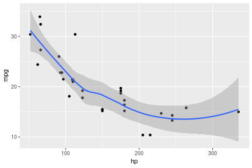

Responsável
- Antonio Augusto Franco Garcia
Monitores
- João Ricardo B F Rosa
- Kaio O Graças Dias
- Felipe V Ferrão
- Marianella F Quezada Macchiavello
- Letícia A Castro Lara
- Rafael Storto Nalin
Alunos e ouvintes
- Fale algo a seu respeito!
Antonio Augusto Franco Garcia (http://about.me/augusto.garcia)
Departamento de Genética, ESALQ/USP (2017)


library(ggplot2)
qplot(hp, mpg, data=mtcars)+geom_smooth()

Tell me and I forget,
Teach me and I remember,
Involve me and I learn.
print(sessionInfo(), locale = FALSE)
## R version 3.3.2 (2016-10-31)
## Platform: x86_64-pc-linux-gnu (64-bit)
## Running under: Ubuntu 16.04.2 LTS
##
## attached base packages:
## [1] stats graphics grDevices utils datasets methods base
##
## other attached packages:
## [1] slidify_0.5 knitr_1.15.1 ggplot2_2.2.1
##
## loaded via a namespace (and not attached):
## [1] Rcpp_0.12.8 codetools_0.2-15 digest_0.6.12 assertthat_0.1
## [5] grid_3.3.2 plyr_1.8.4 gtable_0.2.0 magrittr_1.5
## [9] evaluate_0.10 scales_0.4.1 highr_0.6 stringi_1.1.2
## [13] lazyeval_0.2.0 whisker_0.3-2 labeling_0.3 tools_3.3.2
## [17] stringr_1.1.0 munsell_0.4.3 markdown_0.7.7 yaml_2.1.14
## [21] compiler_3.3.2 colorspace_1.3-2 tibble_1.2
OBRIGADO!